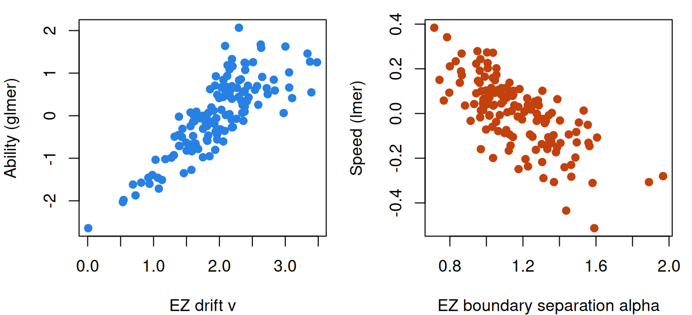
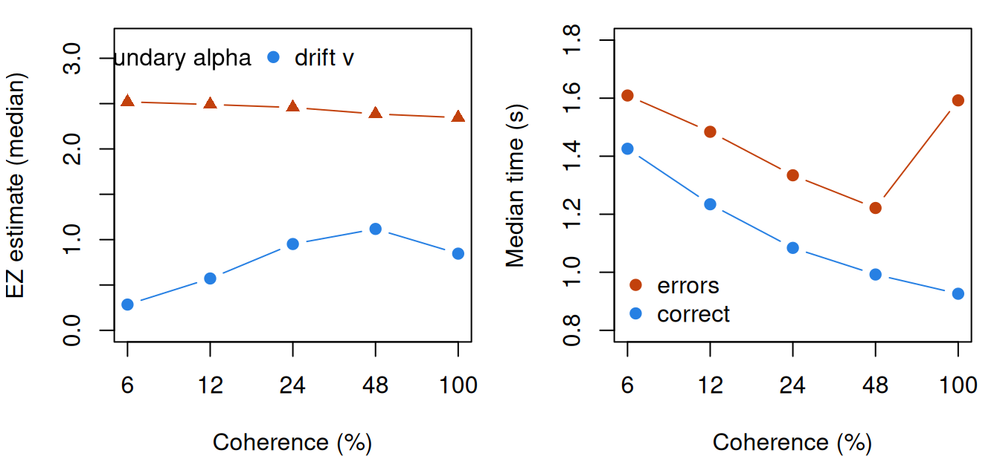

Process models for response time: drift diffusion and race models
What this is for
Response time and the speed-accuracy tradeoff modelled time and accuracy separately, joined by a correlation, and then found in four tables that a response’s time said something about whether it was right. Where does that dependence come from? A process model answers by describing the decision itself: evidence builds up, noisily, until there is enough to act on, and that one process produces both the choice and the time. This lesson builds the diffusion model from a random walk, finds the 2PL inside it, and fits it to three IRW tables: a lexical decision task where its simple form roughly holds, a motion task whose errors are slower than it allows, and a licensure exam whose items it wasn’t built for.
Goals
By the end of this lesson you should be able to:
- describe the diffusion model’s four parameters and simulate trials from it;
- predict what a harder stimulus and a speed instruction do, and estimate the parameters with EZ-diffusion;
- derive the 2PL from the diffusion model and say what discrimination means as a process;
- explain why errors can be slower than correct responses, and why that has to be checked within a condition;
- say when a diffusion model, or a race model, suits the data in hand.
Core ideas
A decision as a random walk
A respondent is deciding whether a string of letters is a word. Keep a running total of the evidence, \(x\), that starts at \(z\) and moves upward on average when the string is a word. When it reaches an upper boundary at \(\alpha\) the respondent says “word”; when it falls to 0 they say “nonword”. The time to get there plus a non-decision time \(T_{er}\), for seeing the string and pressing the key, is the response time. Formally, over each small interval \(dt\) the total moves by \(v\,dt\) plus normal noise with SD \(s\sqrt{dt}\). This is the diffusion model (Ratcliff, 1978; Ratcliff & McKoon, 2008), with four parameters:
- the drift \(v\): the quality of the evidence, how fast the total moves toward the correct boundary;
- the boundary separation \(\alpha\): how much evidence the respondent requires, their caution;
- the starting point \(z\): a bias toward one response (\(z = \alpha/2\) is unbiased);
- the non-decision time \(T_{er}\).
The noise \(s\) only sets the scale (Ratcliff & McKoon, 2008). We fix \(s = 1\); the documentation of the R package rtdists (Singmann et al., 2014) notes that Ratcliff and others often use \(s = 0.1\), which makes \(v\) and \(\alpha\) ten times smaller. The diffusion literature calls the boundary \(a\); we write \(\alpha\) to keep \(a\) for the item slope, though the two turn out to be the same thing.
Try it: the random walk
Each thin line is one trial (blue ends correct, orange in an error). Below, times for 1,500 trials: correct responses above the axis, errors below.
Both histograms have the long right tail that the lognormal model assumed, here produced by the walk. With the start halfway, the two medians agree to within sampling noise (0.53 and 0.55 s as the widget loads). Move the starting point to 0.3 and errors become common and fast: a walk that starts near the error boundary gets there quickly.
So the simple model assumes conditional independence, trial by trial. Kang, De Boeck and Ratcliff (2022) show that letting drift vary across persons and items, and the starting point vary too, produces the positive, negative and curved conditional accuracy functions found in test data, shapes like the inverted U in the response-time lesson’s lexical task.
What the parameters mean, and EZ-diffusion
With an unbiased start and \(s = 1\) the model gives two closed forms: \[\Pr(\text{correct}) = \frac{1}{1 + e^{-\alpha v}}, \qquad \text{mean decision time} = \frac{\alpha}{2v}\,\tanh\!\left(\frac{\alpha v}{2}\right).\] A harder stimulus lowers the drift, so the respondent is less accurate and slower. An instruction to hurry lowers the boundary, so they are faster but less accurate. The response-time lesson’s speed–accuracy tradeoff becomes one parameter, \(\alpha\), and moving along it leaves the drift alone. Ratcliff and McKoon (2008) review experiments in which stimulus difficulty moved the drift and speed or accuracy instructions moved the boundaries.
Try it: drift or boundary?
Accuracy against mean response time (\(T_{er}\) = 0.3 s) as the boundary changes (blue) or the drift changes (orange); the dot is the current setting.
Lower α and the dot slides down the blue curve, toward faster and less accurate responses. Lower the drift and it slides down the orange curve, toward slower and less accurate ones. The two leave different marks on time and accuracy together, which is how a model tells them apart.
The closed forms can be run backwards. EZ-diffusion (Wagenmakers, van der Maas & Grasman, 2007) takes three numbers from a set of trials (the proportion correct and the mean and variance of the correct response times) and returns \(v\), \(\alpha\) and \(T_{er}\) in closed form. It assumes the simple model (an unbiased start, no variability across trials) and ignores the error times. Ratcliff (2008) shows that it is sensitive to outlying times and can mislead when its assumptions don’t hold, and suggests it for exploration rather than final estimates. EZ is a reasonable choice for a first look at many respondents with many trials each, and it is a few lines of base R; full fits are in Going further.
The diffusion model is an item response model
Now let the drift depend on who meets which item: \(v_{ij} = \theta_j - b_i\), the respondent’s ability minus the item’s difficulty. Put that into the accuracy formula: \[\Pr(x_{ij} = 1) = \frac{1}{1 + e^{-\alpha(\theta_j - b_i)}}.\] That is a 2PL whose slope is the boundary separation. Tuerlinckx and De Boeck (2005) read discrimination this way: the amount of information collected before responding. Whose boundary is it? If it belongs to the item (a time limit, a format that invites care), \(\alpha_i\) is an ordinary item slope. If it belongs to the respondent, a cautious respondent’s answers discriminate more: a slope that varies by person, which the 2PL doesn’t have. Van der Maas et al. (2011) follow this line to a new model for accuracy and speed, and diffIRT fits diffusion item response models (Molenaar, Tuerlinckx & van der Maas, 2015).
Try it: the 2PL inside the walk
Drift is θ − b. Curves are the closed forms for two boundaries; dots are proportions correct in 200 simulated walks at each ability (first boundary).
The dots, from nothing but random walks, sit on a logistic curve, steeper for the wider boundary, as for a larger slope. The right panel is what a 2PL can’t see: decisions take longest for respondents near the item’s difficulty, where the drift is near zero, and the wider boundary takes longer everywhere. The model predicts which responses should be slow, not only which should be right.
Slow errors
The simple model predicts no gap within a condition, as the first widget showed. Data can have one (the motion task below does), and Ratcliff and Rouder (1998) account for it with variability across trials. If the drift varies from trial to trial (SD \(\eta\)), errors come mostly from trials whose drift happened to be low, and those trials are slow however they end: errors are slower. If the starting point varies, errors come mostly from trials that began near the wrong boundary, and those end quickly: errors are faster (Ratcliff & McKoon, 2008).
The pooled rr98_accuracy gap is the same mechanism one level up, with conditions of different difficulty playing the part of trials with different drift. So before reading slow errors as drift variability, compare error and correct times within a condition, and within a respondent.
Try it: variability across trials
3,000 trials with drift 1.5 and boundary 2 on average.
With both sliders at 0 the dashed medians nearly coincide (a gap of 0.03 s). Raise η to 1 and errors become slower by about a quarter of a second, and accuracy falls. Put η back to 0 and raise the start’s range to 0.8: now errors are faster, by about as much.
Race models for more than two options
One accumulator with two boundaries suits two responses. With three or more (the ink colours in a Stroop task, the options of a multiple-choice item) the natural extension is a race: each option has its own accumulator, and the first to reach its threshold gives the response and the time (Heathcote & Matzke, 2022). Tuerlinckx and De Boeck (2005) derive the 2PL from a race model too. The linear ballistic accumulator (Brown & Heathcote, 2008) is the tractable case: independent accumulators rise in straight lines, without noise within a trial, toward a common threshold, which gives closed-form solutions for any number of options. Problem 6 sketches one.
Simulate
The code generates 100 respondents × 200 trials as plain random walks in base R (a second or two), each respondent with their own drift, boundary and non-decision time. It recovers them with EZ-diffusion and compares an accuracy-only ability, the logit of the proportion correct, with the truth.
With the seed as written, EZ’s average drift matches the truth (1.47), and its estimates correlate 0.97 with the true drifts, 0.97 with the boundaries and 0.93 with the non-decision times (boundaries run slightly wide, 1.32 against 1.29, from the walk’s step size). The accuracy-only ability correlates 0.86 with drift and 0.47 with the boundary: judged by accuracy alone, a careful respondent looks abler. Now set eta <- 1. EZ’s average drift falls to 1.18 against a true 1.47, though it still orders respondents well (0.95), and errors become slower than correct responses (0.67 against 0.64 s).
Download this code to run it as large as you like in your own R session.
With real data
mturkddm_lexical is the main example: fast two-choice decisions, many trials per respondent. motion is the contrast: stimulus strength is varied by design, and errors are slow. credentialform_lnirt, the licensure exam from the response-time lesson, is the failure case: items that take most of a minute. Download the code; it needs lme4. EZ and the trimming rule are shared by all three:
Code
# EZ-diffusion: drift v, boundary separation alpha and non-decision time Ter from three
# numbers, the proportion correct and the mean and variance of correct response times.
# s is the SD of the within-trial noise; we use s = 1 (see the lesson).
ez <- function(pc, vrt, mrt, s = 1) {
L <- qlogis(pc)
x <- L * (L * pc^2 - L * pc + pc - 0.5) / vrt
v <- sign(pc - 0.5) * s * x^(1/4)
a <- s^2 * L / v
y <- -v * a / s^2
mdt <- (a / (2 * v)) * (1 - exp(y)) / (1 + exp(y)) # mean decision time
c(v = v, alpha = a, ter = mrt - mdt)
}
# EZ for one set of trials. A perfect score has no logit, so it gets the usual
# edge correction (half an error); at exactly 0.5 accuracy EZ is undefined (NaN).
ez_trials <- function(resp, rt) {
n <- length(resp); pc <- mean(resp)
if (pc == 1) pc <- 1 - 1 / (2 * n)
rc <- rt[resp == 1]
c(n = n, pc = pc, ez(pc, var(rc), mean(rc)))
}
# Set aside responses under 0.3 s (fast guesses: accuracy is near chance below that
# in both speeded tables) and the slowest 1% of each table.
trim <- function(d) d[d$rt >= 0.3 & d$rt <= quantile(d$rt, 0.99), ]
# Error minus correct median time within each group of trials (a respondent, an item,
# a respondent at one condition), for groups with at least 5 errors.
within_gap <- function(d, by) {
g <- sapply(split(d, by), function(x)
if (sum(x$resp == 0) >= 5) median(x$rt[x$resp == 0]) - median(x$rt[x$resp == 1]) else NA)
g[!is.na(g)]
}Lexical decision online
Ratcliff and Hendrickson (2021) repeated a lexical decision experiment with respondents recruited on Amazon Mechanical Turk to see whether online data reproduce laboratory results. Each respondent judged 480 strings, real words and made-up ones. Keying: 1 is a correct judgement.
Code
library(lme4)
options(digits = 7) # R's default, in case a .Rprofile changes it
url <- "https://redivis.com/api/v1/tables/datapages.item_response_warehouse:v60_0.mturkddm_lexical/rows?format=csv"
lx <- read.csv(url)
# One row per trial; item is the letter string shown, resp is 1 for a correct
# word/nonword judgement, rt is in seconds. 136 invalid keypresses have no response.
lx <- lx[!is.na(lx$resp), ]
c(respondents = length(unique(lx$id)), strings = length(unique(lx$item)),
trials_per_respondent = median(table(lx$id))) respondents strings trials_per_respondent
142 4588 480 Code
round(c(accuracy = mean(lx$resp), median_s = median(lx$rt),
share_under_0.3s = mean(lx$rt < 0.3), accuracy_under_0.3s = mean(lx$resp[lx$rt < 0.3]),
slowest_1pct_from_s = unname(quantile(lx$rt, 0.99))), 3) accuracy median_s share_under_0.3s accuracy_under_0.3s
0.885 0.638 0.010 0.527
slowest_1pct_from_s
1.995 Code
lx <- trim(lx)Responses under 0.3 s (1% of trials) are right about half the time, like guesses, so we set them aside with the slowest 1% (over 2 s). Does the simple model’s symmetry hold?
Code
# Are errors slower than correct responses? Pooled, and within each respondent.
gap_lx <- within_gap(lx, lx$id)
round(c(median_correct = median(lx$rt[lx$resp == 1]), median_error = median(lx$rt[lx$resp == 0]),
within_respondent_gap = median(gap_lx), share_slower = mean(gap_lx > 0)), 3) median_correct median_error within_respondent_gap
0.639 0.633 0.014
share_slower
0.606 Roughly. Errors take 0.633 s and correct responses 0.639 s; within a respondent, errors are slower by 0.014 s, in 61% of respondents. Against responses of about 0.64 s the gap is small, so EZ’s simple model is a fair approximation. EZ for each respondent:
Code
# EZ for each respondent, over all 480 of their trials (words and nonwords together).
pp <- as.data.frame(do.call(rbind, lapply(split(lx, lx$id), function(x) ez_trials(x$resp, x$rt))))
pp$id <- as.integer(names(split(lx, lx$id)))
round(sapply(pp[, c("pc", "v", "alpha", "ter")], quantile, c(0.1, 0.5, 0.9)), 2) pc v alpha ter
10% 0.80 1.27 0.94 0.37
50% 0.90 1.98 1.13 0.44
90% 0.97 2.63 1.46 0.54The median respondent has drift 1.98, boundary 1.13 and non-decision time 0.44 s. EZ pools each respondent’s words and nonwords into one drift, a simplification problem 2 undoes. Set these beside the response-time lesson’s estimates: an ability from a Rasch-type glmer fit and a speed from the lognormal lmer fit.
Code
# A Rasch-type ability (glmer with crossed random effects) and a speed (minus the
# respondent effect on log time, lmer), as in response-time. nAGQ = 0 skips glmer's
# slowest step.
m_acc <- glmer(resp ~ 1 + (1 | id) + (1 | item), lx, binomial, nAGQ = 0)
m_time <- lmer(log(rt) ~ 1 + (1 | id) + (1 | item), lx)
pp$theta <- ranef(m_acc)$id[as.character(pp$id), 1]
pp$speed <- -ranef(m_time)$id[as.character(pp$id), 1]
round(cor(pp[, c("v", "alpha", "ter", "theta", "speed")]), 2) v alpha ter theta speed
v 1.00 -0.06 0.07 0.82 0.19
alpha -0.06 1.00 0.19 0.50 -0.71
ter 0.07 0.19 1.00 0.14 -0.77
theta 0.82 0.50 0.14 1.00 -0.19
speed 0.19 -0.71 -0.77 -0.19 1.00Code
op <- par(mfrow = c(1, 2), mar = c(4, 4, 1, 1))
plot(pp$v, pp$theta, pch = 19, col = "#2780e3", xlab = "EZ drift v", ylab = "Ability (glmer)")
plot(pp$alpha, pp$speed, pch = 19, col = "#c2410c", xlab = "EZ boundary separation alpha", ylab = "Speed (lmer)")
Code
par(op)Ability tracks drift (\(r = 0.82\)), and the boundary as well (\(r = 0.50\)): a respondent who waits for more evidence gets more right, and a model of accuracy alone credits that to ability. Speed from the lognormal model is mostly the boundary (\(r = -0.71\)) and the non-decision time (\(r = -0.77\)), and barely relates to drift (\(r = 0.19\)). Ability and speed are nearly unrelated (\(r = -0.19\)), much as in the ROAR lexical task of the response-time lesson. The diffusion model reads that near-zero as speed and ability being built from different parts of the process.
Random-dot motion: the model’s story, and slow errors
In O’Brien and Yeatman’s (2021) study of dyslexia, 106 school-aged children reported the direction of a field of moving dots, of which 6%, 12%, 24%, 48% or 100% moved together (the coherence). An IRW item is a block of the session and a coherence level, met 10 times, so each child has 60 trials per level (processing script). Keying: 1 is correct.
Code
url <- "https://redivis.com/api/v1/tables/datapages.item_response_warehouse:v60_0.motion/rows?format=csv"
mo <- read.csv(url)
# item is "<block> <coherence>": block 1-6 of the session, and the percentage of dots
# moving together (6, 12, 24, 48 or 100). Each respondent saw each item 10 times
# (trialnum), so 60 trials per coherence level. resp is 1 for the right direction.
mo$block <- as.integer(sub(" .*", "", mo$item))
mo$coherence <- as.integer(sub(".* ", "", mo$item))
c(respondents = length(unique(mo$id)), items = length(unique(mo$item)),
trials_per_respondent = median(table(mo$id))) respondents items trials_per_respondent
106 30 300 Code
round(c(accuracy = mean(mo$resp), median_s = median(mo$rt),
share_under_0.3s = mean(mo$rt < 0.3), accuracy_under_0.3s = mean(mo$resp[mo$rt < 0.3]),
slowest_1pct_from_s = unname(quantile(mo$rt, 0.99))), 3) accuracy median_s share_under_0.3s accuracy_under_0.3s
0.801 1.151 0.017 0.460
slowest_1pct_from_s
7.503 Code
mo <- trim(mo)Again, responses under 0.3 s are at chance (0.46), and we set them aside with the slowest 1% (over 7.5 s). EZ for each child at each coherence level, and the medians across children:
Code
# EZ for each respondent at each coherence level (about 60 trials), then the median
# across respondents. Alongside: accuracy, and median correct and error times.
cells <- split(mo, list(mo$id, mo$coherence))
pl <- as.data.frame(do.call(rbind, lapply(cells, function(x)
c(id = x$id[1], coherence = x$coherence[1], ez_trials(x$resp, x$rt)))))
by_coh <- aggregate(cbind(pc, v, alpha, ter) ~ coherence, pl, median)
by_coh$median_correct <- tapply(mo$rt[mo$resp == 1], mo$coherence[mo$resp == 1], median)
by_coh$median_error <- tapply(mo$rt[mo$resp == 0], mo$coherence[mo$resp == 0], median)
round(by_coh, 2)| coherence | pc | v | alpha | ter | median_correct | median_error |
|---|---|---|---|---|---|---|
| 6 | 0.67 | 0.28 | 2.52 | 0.42 | 1.43 | 1.61 |
| 12 | 0.78 | 0.57 | 2.49 | 0.31 | 1.23 | 1.48 |
| 24 | 0.90 | 0.95 | 2.46 | 0.35 | 1.08 | 1.33 |
| 48 | 0.95 | 1.12 | 2.39 | 0.30 | 0.99 | 1.22 |
| 100 | 0.88 | 0.85 | 2.35 | 0.35 | 0.93 | 1.59 |
From 6% to 48% coherence the median drift rises from 0.28 to 1.12, while the boundary barely moves (2.52 to 2.39). That is the model’s story: the stimulus changed, so the evidence changed, and the children’s caution didn’t. At 100% the drift falls back to 0.85; the authors report that many children found full coherence difficult, and they left it out of their analysis. The last two columns hold something the simple model doesn’t allow: errors are slower than correct responses at every level. Is that composition again, as in rr98_accuracy?
Code
# Error minus correct median time within each respondent at each coherence level
# (cells with at least 5 errors), summarised by level.
mo$cell <- paste(mo$id, mo$coherence)
gap_mo <- within_gap(mo, mo$cell)
coh_of <- as.integer(sub(".* ", "", names(gap_mo)))
round(rbind(within_gap = tapply(gap_mo, coh_of, median),
share_slower = tapply(gap_mo > 0, coh_of, mean),
cells = tapply(gap_mo, coh_of, length)), 2) 6 12 24 48 100
within_gap 0.17 0.26 0.13 0.14 0.34
share_slower 0.71 0.79 0.66 0.64 0.77
cells 106.00 99.00 61.00 44.00 64.00Code
op <- par(mfrow = c(1, 2), mar = c(4, 4, 1, 1))
lev <- factor(by_coh$coherence)
plot(seq_along(lev), by_coh$v, type = "b", pch = 19, col = "#2780e3", xaxt = "n",
ylim = c(0, 3.2), xlab = "Coherence (%)", ylab = "EZ estimate (median)")
lines(seq_along(lev), by_coh$alpha, type = "b", pch = 17, col = "#c2410c")
axis(1, at = seq_along(lev), labels = levels(lev))
legend("topright", c("boundary alpha", "drift v"), col = c("#c2410c", "#2780e3"), pch = c(17, 19), bty = "n", horiz = TRUE)
plot(seq_along(lev), by_coh$median_error, type = "b", pch = 19, col = "#c2410c", xaxt = "n",
ylim = c(0.8, 1.8), xlab = "Coherence (%)", ylab = "Median time (s)")
lines(seq_along(lev), by_coh$median_correct, type = "b", pch = 19, col = "#2780e3")
axis(1, at = seq_along(lev), labels = levels(lev))
legend("bottomleft", c("errors", "correct"), col = c("#c2410c", "#2780e3"), pch = 19, bty = "n")
Code
par(op)No. Within a child and a coherence level, errors are slower by 0.13 to 0.34 s, in 64% to 79% of cells. These are slow errors that one drift per condition can’t produce and across-trial variability in drift can; O’Brien and Yeatman’s own fits included it. EZ leaves it out, so by the Simulate section’s result its drifts here are probably too low, though their order should hold.
A licensure exam: where the reading runs out
Nothing in the EZ equations refuses seconds:
Code
url <- "https://redivis.com/api/v1/tables/datapages.item_response_warehouse:v60_0.credentialform_lnirt/rows?format=csv"
cf <- read.csv(url)
# As in response-time: the 170 scored items (171-200 are pilot items whose names
# depend on the pilot set), and times of 0 (under a second) set aside.
cf$inum <- as.integer(sub("iraw.", "", cf$item))
cf <- cf[cf$inum <= 170 & cf$rt > 0, ]
round(c(respondents = length(unique(cf$id)), accuracy = mean(cf$resp),
median_s = median(cf$rt)), 2)respondents accuracy median_s
1636.00 0.73 54.00 Code
# EZ for each respondent over their 170 items: seconds, not fractions of a second.
pc_cf <- as.data.frame(do.call(rbind, lapply(split(cf, cf$id), function(x) ez_trials(x$resp, x$rt))))
round(c(median_v = median(pc_cf$v, na.rm = TRUE), median_alpha = median(pc_cf$alpha, na.rm = TRUE),
median_ter_s = median(pc_cf$ter, na.rm = TRUE),
share_ter_negative = mean(pc_cf$ter < 0, na.rm = TRUE),
undefined_at_0.5 = sum(is.na(pc_cf$ter))), 3) median_v median_alpha median_ter_s share_ter_negative
0.074 14.050 12.822 0.067
undefined_at_0.5
5.000 Code
# Errors against correct responses, within each item.
gap_cf <- within_gap(cf, cf$item)
round(c(within_item_gap_s = median(gap_cf), share_slower = mean(gap_cf > 0)), 2)within_item_gap_s share_slower
19.00 0.95 The numbers come out, but not with the model’s meaning. The median non-decision time is 12.8 s, and it is negative, which is impossible, for 6.7% of respondents; five respondents at exactly half right get no estimate at all. On 95% of items errors are slower than correct responses, by a median 19 s. A 54-second item is not one accumulation of evidence toward two boundaries but reading, working and choosing among several options. The failure is in the model’s assumptions for these items, not in the data.
So when would I reach for a diffusion model? When each response is a single fast decision between two options and each respondent gives many trials, as in lexical decision, motion and brightness judgements. There it separates what accuracy alone mixes, ability and caution, and in the lexical data the mixing is substantial (ability and boundary correlate 0.50). For test items that take most of a minute I wouldn’t: the licensure exam gives parameters with no process to belong to. A model of the decision needs data made of decisions.
Problems
- Discrimination as a boundary. From the absorption probability in the second Go deeper callout, show that with \(z = \alpha/2\), \(\Pr(\text{correct}) = 1/(1 + e^{-\alpha v/s^2})\). With \(v = \theta - b\), read off the 2PL’s discrimination. What is it for a paper that reports \(\alpha = 0.12\) with \(s = 0.1\)? Why does the non-decision time not enter?
- Words and nonwords. The IRW table doesn’t say which strings are words; the original deposit does:
Experiment1.dataat osf.io/za9y8 (Ratcliff & Hendrickson, 2021; CC BY 4.0) hascolumn_7_value(1 = word, 2 = nonword) for eachtest_word_string, which is the IRW’sitem, andcolumn_8_value(the frequency pool). Run EZ separately on words and nonwords for each respondent. Which parameter differs, and is that what the model says should change? Repeat for high- and low-frequency words. - Slow errors in the motion task. Errors are slower within a child and a coherence level. Which extension of the diffusion model produces that, and what else does it predict about accuracy and about the error distribution? Check one prediction in the data. Why might the gap be largest at 100% coherence?
- A non-decision time per respondent? A colleague wants to report each respondent’s \(T_{er}\) from a 12-item untimed reasoning test, as a measure of processing speed. Advise them, using what EZ did on the licensure exam and what the diffusion model assumes a response is.
- Separating drift from caution. For a two-choice screening task in schools, what would you vary within respondents so that each child’s drift and boundary are separately identified? How many trials per condition would you want, and how would you check by simulation that EZ recovers individual differences well enough?
- Challenge (open). Sketch a race model for a Stroop task (Stroop, 1935) with three or more ink colours. What would the word’s meaning do to the accumulators? How would an item’s difficulty and a respondent’s ability enter, and what item response model for the choice among colours falls out? I don’t know of a derivation that gives a standard polytomous model exactly.
Going further
- Ratcliff, R. (1978). A theory of memory retrieval. Psychological Review, 85(2), 59–108. https://doi.org/10.1037/0033-295X.85.2.59. Where the diffusion model starts.
- Ratcliff, R., & McKoon, G. (2008). The diffusion decision model: Theory and data for two-choice decision tasks. Neural Computation, 20(4), 873–922. https://doi.org/10.1162/neco.2008.12-06-420. A review of the model, its variability parameters and the experiments that move each parameter.
- Ratcliff, R., & Rouder, J. N. (1998). Modeling response times for two-choice decisions. Psychological Science, 9(5), 347–356. https://doi.org/10.1111/1467-9280.00067. The brightness experiment, with fast and slow errors explained by variability across trials.
- Ratcliff, R., & Tuerlinckx, F. (2002). Estimating parameters of the diffusion model: Approaches to dealing with contaminant reaction times and parameter variability. Psychonomic Bulletin & Review, 9(3), 438–481. https://doi.org/10.3758/BF03196302. Fitting the full model, variability and outlying times included.
- Wagenmakers, E.-J., van der Maas, H. L. J., & Grasman, R. P. P. P. (2007). An EZ-diffusion model for response time and accuracy. Psychonomic Bulletin & Review, 14(1), 3–22. https://doi.org/10.3758/BF03194023. The EZ equations and their recovery in simulation.
- Ratcliff, R. (2008). The EZ diffusion method: Too EZ? Psychonomic Bulletin & Review, 15(6), 1218–1228. https://doi.org/10.3758/PBR.15.6.1218. Where EZ’s estimates can mislead, and what the full fits do instead.
- Vandekerckhove, J., Tuerlinckx, F., & Lee, M. D. (2011). Hierarchical diffusion models for two-choice response times. Psychological Methods, 16(1), 44–62. https://doi.org/10.1037/a0021765. The diffusion model as a hierarchical Bayesian model, with persons and conditions as levels.
- Wiecki, T. V., Sofer, I., & Frank, M. J. (2013). HDDM: Hierarchical Bayesian estimation of the drift-diffusion model in Python. Frontiers in Neuroinformatics, 7, 14. https://doi.org/10.3389/fninf.2013.00014. Software for hierarchical fits.
- Tuerlinckx, F., & De Boeck, P. (2005). Two interpretations of the discrimination parameter. Psychometrika, 70(4), 629–650. https://doi.org/10.1007/s11336-000-0810-3. The 2PL from a diffusion model and from a race model.
- van der Maas, H. L. J., Molenaar, D., Maris, G., Kievit, R. A., & Borsboom, D. (2011). Cognitive psychology meets psychometric theory: On the relation between process models for decision making and latent variable models for individual differences. Psychological Review, 118(2), 339–356. https://doi.org/10.1037/a0022749. What a diffusion process implies for measuring abilities and attitudes.
- Molenaar, D., Tuerlinckx, F., & van der Maas, H. L. J. (2015). Fitting diffusion item response theory models for responses and response times using the R package diffIRT. Journal of Statistical Software, 66(4). https://doi.org/10.18637/jss.v066.i04. Software for diffusion item response models.
- Kang, I., De Boeck, P., & Ratcliff, R. (2022). Modeling conditional dependence of response accuracy and response time with the diffusion item response theory model. Psychometrika, 87(2), 725–748. https://doi.org/10.1007/s11336-021-09819-5. Variability in drift and starting point as a source of conditional dependence.
- Brown, S. D., & Heathcote, A. (2008). The simplest complete model of choice response time: Linear ballistic accumulation. Cognitive Psychology, 57(3), 153–178. https://doi.org/10.1016/j.cogpsych.2007.12.002. The linear ballistic accumulator.
- Heathcote, A., & Matzke, D. (2022). Winner takes all! What are race models, and why and how should psychologists use them? Current Directions in Psychological Science, 31(5), 383–394. https://doi.org/10.1177/09637214221095852. A short introduction to race models.
- Singmann, H., Brown, S., Gretton, M., Heathcote, A., & Fernandez, A. (2014). rtdists: Response time distributions [R package]. https://doi.org/10.32614/CRAN.package.rtdists. Densities and random draws for the diffusion model and the LBA.
- Tuerlinckx, F., Molenaar, D., & van der Maas, H. L. J. (2016). Diffusion-based response-time models. In W. J. van der Linden (Ed.), Handbook of item response theory: Vol. 1. Models (pp. 283–300). Chapman and Hall/CRC. https://doi.org/10.1201/9781315374512. A handbook chapter on diffusion models for responses and response times.
Data sources
Data from the Item Response Warehouse (each table name links to its IRW page); references from IRW biblio.
mturkddm_lexical: Ratcliff, R., Hendrickson, A.T. Do data from mechanical Turk subjects replicate accuracy, response time, and diffusion modeling results?. Behav Res 53, 2302–2325 (2021). https://doi.org/10.3758/s13428-021-01573-x. Licence: CC BY 4.0.motion: O’Brien, G., & Yeatman, J. D. (2021). Bridging sensory and language theories of dyslexia: Toward a multifactorial model. Developmental Science, 24(3), e13039. https://doi.org/10.1111/desc.13039. Licence: CC BY 4.0.credentialform_lnirt: Cizek, G. J., & Wollack, J. A. (Eds.). (2016). Handbook of quantitative methods for detecting cheating on tests. Abingdon, England: Routledge. https://cran.r-project.org/web/packages/LNIRT/index.html. Licence: GPL-3.0.
For instructors
- Source: EDUC 252 class 9, slides 55–56, which sketch diffusion and race models; the rest is new.
- Timing: about 45 minutes for the core ideas and widgets, and a 30-minute lab. The licensure table takes a minute to download.
- Software: EZ and the random walk are base R.
rtdistsis in the webR repository, but drawing 20,000 trials with a drift per respondent–item pair ran over two minutes locally; the plain walk takes a second or two. - Changed from the outline: boundary separation is written \(\alpha\), keeping \(a\) for the item slope.
- Held back: full or hierarchical fits with across-trial variability (Going further); diffusion item response models for test items (problem 4); rapid guessing as a separate process.
- Solutions: held back in
solutions/rt-process-models.qmd(not published). Problem 6 is open.